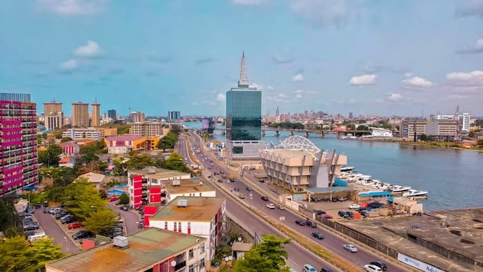

Lagos(Eko) is my favorite city in Nigeria, sprawls inland from the Gulf of Guinea across Lagos Lagoon. Victoria Island, the financial center of the metropolis, is known for its beach resorts, boutiques and nightlife. To the north, Lagos Island is home to the National Museum Lagos, displaying cultural artifacts and craft works. Nearby is Freedom Park,once a colonial-era prison and now a major venue for concerts and public events.
